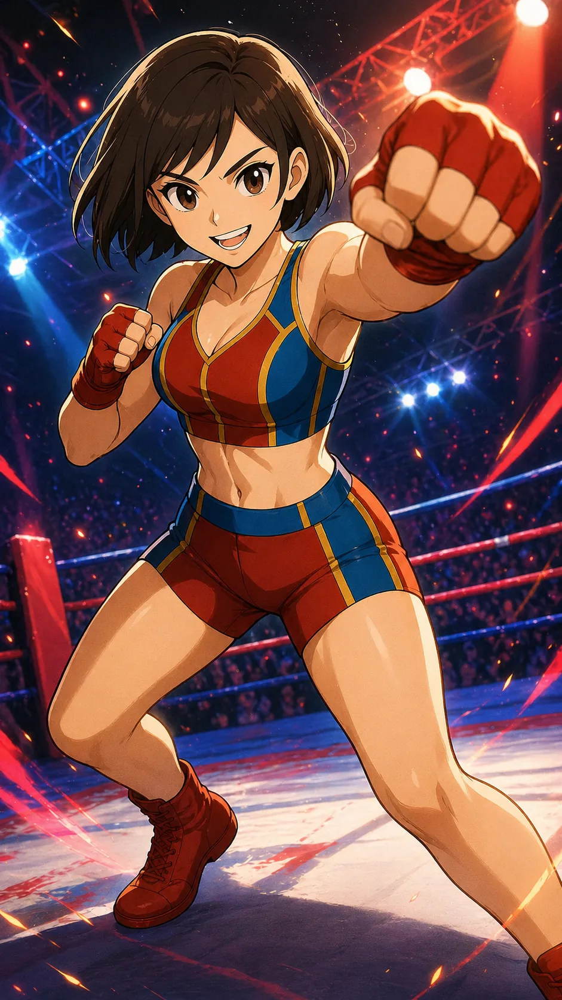

CHARACTER FILE

サラ
『未来を切り拓く一閃の勇気』
基本情報
- 年齢
- 19歳
- 体格
- 160cm・しなやかなスピード型体型（しっかりした下半身とバネのある筋肉質）
必殺技
【ブレイブクラッシュ】飛び膝蹴りからの高速コンボ一閃！流れを一気に変える爆発力。
超必殺技
【ブレイブコンヴィクション】仲間と観客の“想い”をその拳に一点収束させ、限界を超えて放つ渾身の一撃。衝突の瞬間、リングを貫く希望の衝撃が走る。
性格
明るく前向きな性格で、自然と周囲を元気づける存在。まだ未熟な部分もあるが、誰よりも努力を惜しまない。観客にもチームにも愛される、未来を背負うエース候補。
ファイトスタイル
スピード・テクニック型。俊敏なフットワークを活かし、流れるようなコンボと高低差を生かしたジャンプ技を得意とする。
相性
- 有利な相手
- 重いパワー型、鈍重な守備型（動きの速さで翻弄できる）
- 不利な相手
- 完封カウンター型、フェイント主体のトリック型
プロフィール
笑顔と情熱で未来を駆ける、新星サラ。幼い頃、命の危機に瀕していた彼女を救ってくれた“ある女性”――名前も知らぬその存在は、サラの中でずっと「憧れの強さ」として刻まれている。 「私も、あの人みたいに誰かを守れる人になりたい」――その想いを胸に、彼女はリングへと飛び込んだ。まだ粗削りで未熟な部分は多い。 だが、跳ねるようなステップ、眩しい笑顔、そして誰よりも仲間を信じる純粋な心が、サラの最大の武器。仲間たちと共に重ねた時間の中で、あの日の記憶と“今守りたい絆”が交差した瞬間、技は覚醒した。「ブレイブコンヴィクション」──それは仲間の想いを背負い、命の重みを知る者だけが放てる、誓いの一撃。 サラの強さは、拳の速さでも技の切れでもない。誰かのために立ち上がる勇気こそが、彼女の“本当の力”なのだ。
口癖
「負けて上等！ボコされて上等！私は挑戦者！」